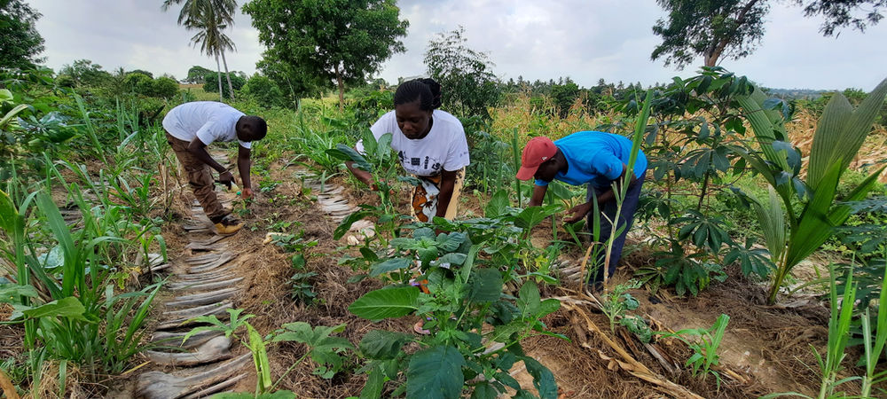
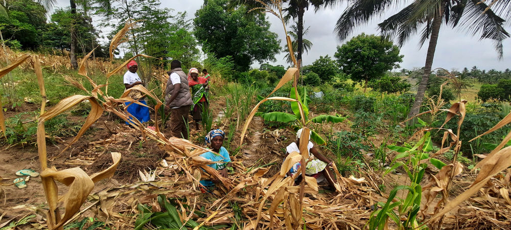

Self-Funded Regenerative Agriculture Kwale Site January Visit

Based on the design found in the Kwale Sites the above poster was created by W.Ruddick
On 11th January 2021, I visited Miyani Demo Plot to monitor the progress made a month later after my visit in December. It had rained the previous day therefore crops looked healthy while the temperature was cool. For the past one month, maize had already been harvested and maize stalks used to mulch on the beds. Some vegetables such as capsicum/sweet pepper had been planted in the mid rows of the beds. In the nursery a variety of indigenous vegetables including amaranth and night shade were sprouting and will be ready for transplanting in a few weeks.
The garden is slowly transforming from a mono-crop of maize, to a food forest with fruit trees, cassava and moringa now over a meter high. Despite the long dry season having started a month ago, the garden still has a huge potential to continue producing vegetables for the community in the coming months.
However, a few challenges exist including pests and disease. Aphids have attacked okra in their thousands, while caterpillars have attacked kale. As I had earlier predicted, this was bound to happen during the first to second year before the whole ecosystem matures to be able to regulate its own pests and disease.
Topics covered.
1. Planting succession.
I emphasized on the need for planting in succession. After harvesting of any crop, another crop should be planted immediately to maximize on space, sunlight and water.
Factors to consider when planting.
a). The height of the crop when mature.
b). The space that the crop occupies upon maturity.
c). The time the crop takes before it matures and is harvested.
Use of local, organic and indigenous seeds is encouraged. These seeds are adapted to the environment and are more resilient to pests, disease and drought. I encouraged the community to look for their indigenous seeds, multiply them and start a community seed bank.
2. Mulching.
Mulching should be done on the beds and paths. Mulching helps in conserving moisture, keeping off weeds and helps in adding of soil organic matter when it decomposes. It should be done continously especially before planting.
Various plant matter can be used including grasses, weeds and crop residues. We used maize residues to completely mulch on the footpaths. This should continue at all times ensuring that every square centimetre of the soil is completely covered.
3. Organic Pest Control.
- We covered Integrated Pest Management which is a holistic method for solving pest and disease problems.
- Using Biological methods by creating habitats for beneficial insects and organisms, growing diverse crops and planting repellents such as onions, lemon grass and chillies.
- We also covered making plant biological pesticides using locally available plants such as chilli, garlic and neem. This needs to be applied sparingly as it also affects beneficial insects. It should only be used as the last solution.
- Using mechanical methods such as handpicking caterpillars and using water pressure on aphids.
Next steps to take.
- Increase plant species diversity.
- Continue mulching on the paths and beds.
- Plant more intensively on the beds occupy all the growing space.
- Keep pest population low, continuously check on pest and disease on the crops and act immediately.
- Plant a living hedge of biomass plants such as senna, moringa, pigeon peas, lemon grass and vetiver around the plot. This will not only act as a wild break but also a sun screen, pests barrier and source of biomass for mulching.
- Carry out soil test to determine and document improvements made in soil organic matter.
The progress made is phenomenal and I believe with continuous support, this community will gain knowledge and skills in Syntropic Agroforestry, have access to nutritious food and act as change agents in the community and beyond by spreading Community Inclusion Currency as a self-funding mechanism .